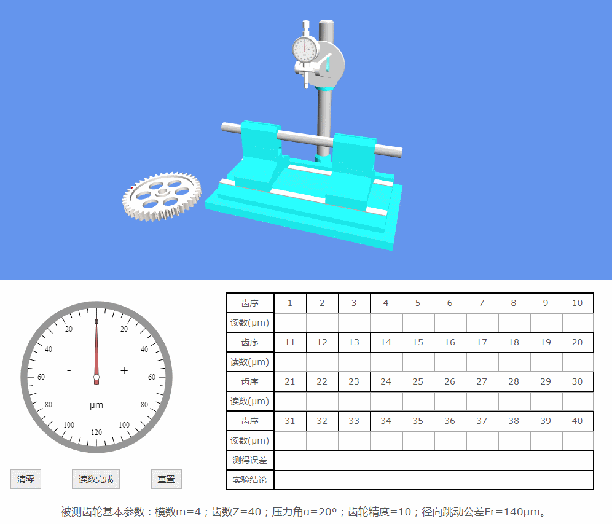

实验说明书
开始实验
虚拟实验演示
齿序
1
2
3
4
5
6
7
8
9
10
读数(μm)
齿序
11
12
13
14
15
16
17
18
19
20
读数(μm)
齿序
21
22
23
24
25
26
27
28
29
30
读数(μm)
齿序
31
32
33
34
35
36
37
38
39
40
读数(μm)
测得误差
实验结论
清零
读数完成
重置
被测齿轮基本参数：模数m=4；齿数Z=40；压力角α=20°；齿轮精度=10；径向跳动公差Fr=140μm。
